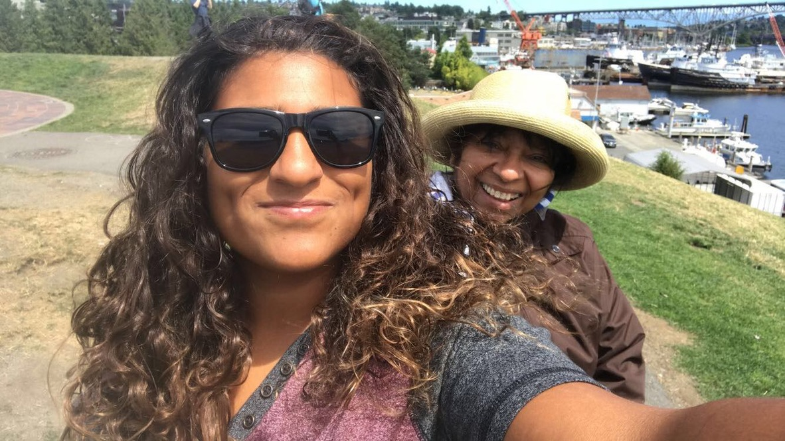
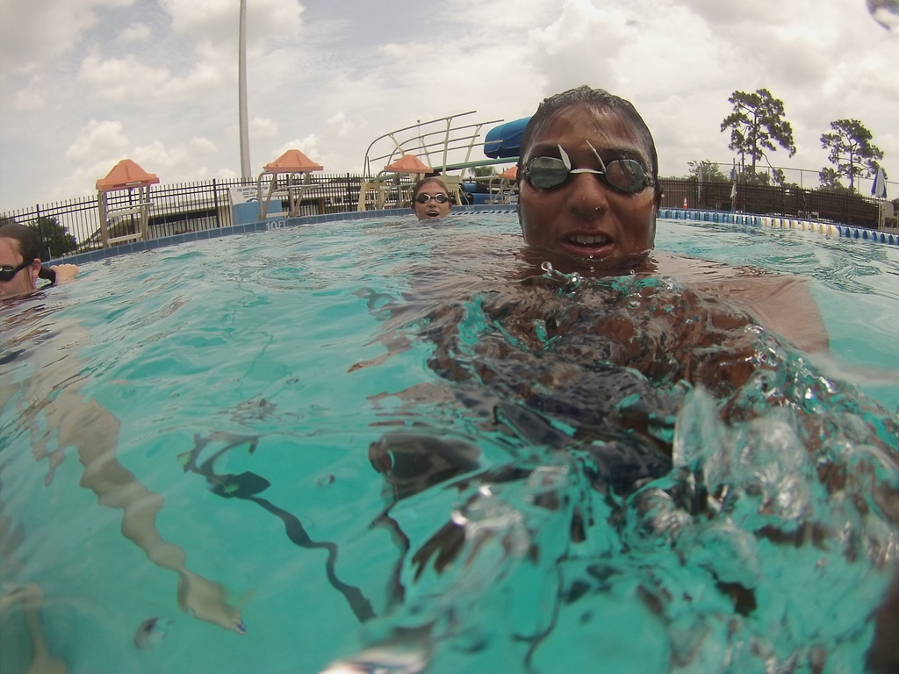

Birth Place

I was born and raised for part of my life in Venezuela, Maracaibo. For those that aren't the best with Georgraphy or other cultures, Venezuela is located in South America.
Social Media
Where you will learn more about me:
My Background
My mom is one of the most important person in my life because she sacrificed so much for me. We migrated to the states back in mid 2000, and as an imigrant we had to learn English and adapt to the American Lifestyle. Tampa, Florida is where we called home for the rest of my young adult life.
Accomplishments:
- Associates in Science with concentration of Criminal Justice.
- Bachlors in Science with concentration of Criminal Justice.
- Certified as Lifeguard, Swim Instructor, CPR/FIRSTAID, and Lifeguard Instructor.
- Worked as a Federal Agent with TSA.
- Worked as Aquatics Assitant Director.
- Cochair of a Diversity and Inclusion Committee.
- Bought a house in Tampa, Florida at age 23.
- Cohosted a radio show at age 18.
- Lived in: Maracaibo-VN, Tampa-FL, Boston-MA.
About Me
I am a "to the point" type of person and don't understand jokes or sideremarks because of my native tongue, I guess you could say I am like computers who are are similar in that way. I also carry many social identies and passions that have helped me become the person I am today.
Social Indetities:
- Latina.
- (L)GBTQ+ queer human.
- Person of color.
- Female.
- Athletic.
- Swim Coach.
- Feminist.
- Daughter of single mother.
- Not conservitive, not liberal, more spiritual.
- Only child.
- Gamer.
- Naturalist.
- Floridian.
- Bilingual.
- Photographer.
- Coder.
- Buy a house in Boston and Seattle.
- Buy a Jeep or 4runner and 1969 Ford Mustang.
- Traveled back to Venezuela and Europe.
- Get married to my fiance Akyanna.
- Adopt children and have a dog.
- Start my own business and get my MBA.
- Build generational wealth.
- Be more kind, humble, and help as many people as I can.
- Be healthy both mentally and physically.
- Find a fullfiling career as Software Engineer.
My Future

I moved to Boston, Massachusetts 2 years ago for TSA and discovered it wasn't really what I wanted to be. The reason why I chose Boston is because my now fiance (I call her my Yonce) is from here and I wanted to live on my own in a place that wasn't where I grew up. Akyanna has been super suportive of my journey and passions and without her, life wouldn't be as fun and adventurous.
Fast forward to the infamous year 2020, I was furloughed from my job as an Assitant Aquatics Director. That is when I discovered my love for coding, I saw on tv a latina girl doing it and thought hmmm why not me? So just a few weeks ago I took the plunge resigned my job and am now studying software development with Coding Temple full time!
I like the asthetics of being a developer and creating something from scracth or even building more from already developed code and continuing to grow. My biggest reason why I want to become a software developer is because I want to find a career that I am passionate about, while also openning oppurtunities for self-growth as well. I think most developers have the same reasoning.